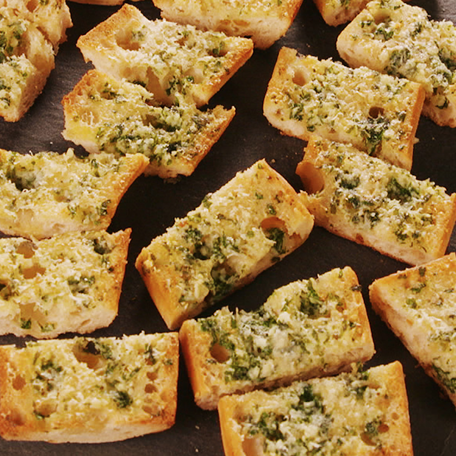

MENU
Water, Cal. 0, $0.00. Ingredients: Water. This water is a direct godsend with its holy absence of flavor. This hydrating liquid was harvested from Cascate del Mulino, in Tuscany, then cooled using the newest in cutting edge cooling technology. These wild waters were tamed by Maria Gionauty herself using her very own patented water transport device.
Red Wine, Cal. 100, $5.99. Ingredients: Red grapes grown in Naples Italy and freshly stomped on bend the restaurant. This wine is equally crisp, dry, oaky, sweet, soft, tannic, fruity, and intense with a great finish. This wine has a high acidity, is extremely angular, a grapey aroma, a full body witha thick backbone, a balanced yet complex structure, zesty legs, and a lively mineral flavor.
Garlic Bread, Cal. 300, $2.99. Ingredients: Freshly baked bread, homemade garlic butter, and parsley for garnish. This sidedish has been baked with the utmost care which has been baked at a heavenly 425 degrees fahrenheit for 45 minutes to make a satisfying crunch when biting into the outside of the bread and a fluffy inside when tearing into the side dish.
Breadsticks, Cal. 300, $2.99. Ingredients: Freshly baked bread, homemade garlic butter, grated parmesean cheese, and parsley for garnish. This sidedish has been baked with the utmost care which has been baked at a heavenly 425 degrees fahrenheit for 45 minutes to make a satisfying crunch when biting into the outside of the bread and a fluffy inside when tearing into the side dish.

Lasagna, Cal. 1100, $13.33. Ingredients: Lasagna noodles, ricotta cheese, fresh mozzarella and parmesean, and authentic Italian meat sauce using local beef and fresh imported Italian tomatoes. The sauce can also come in vegan options such as red sauce. This dish includes house made italian seasoning. This dish is baked to perfection and serves with garlic bread or bread sticks.

Spaghetti Bolognese, Cal. 1100, $10.99. Ingredients: Spagahetti noodles, minced onions carrots celery and garlic, local raised beef minced, plum tomatoes imported directly from Italy, dried basil leaves, bay leaves, puréed tomato, a deseeded red chilli chopped finely, simmered in red wine. This dish is a favorite among our Italian boorn coks and others alinke due to the rich nastalgic flavor.
Gnocchi, Cal. 1100, $13.33. Ingredients: Lasagna noodles, ricotta cheese, fresh mozzarella and parmesean, and authentic Italian meat sauce using local beef and fresh imported Italian tomatoes. The sauce can also come in vegan options such as red sauce. This dish includes house made italian seasoning. This dish is baked to perfection and serves with garlic bread or bread sticks.

Spaghetti Carbonara, Cal. 1100, $10.99. Ingredients: Spagahetti noodles, minced onions carrots celery and garlic, local raised beef minced, plum tomatoes imported directly from Italy, dried basil leaves, bay leaves, puréed tomato, a deseeded red chilli chopped finely, simmered in red wine. This dish is a favorite among our Italian born cooks and others alike due to the rich nastalgic flavor.

Ravioli, Cal. 1100, $13.33. Ingredients: Lasagna noodles, ricotta cheese, fresh mozzarella and parmesean, and authentic Italian meat sauce using local beef and fresh imported Italian tomatoes. The sauce can also come in vegan options such as red sauce. This dish includes house made italian seasoning. This dish is baked to perfection and serves with garlic bread or bread sticks.
Shrimp Pasta, Cal. 1100, $10.99. Ingredients: Spagahetti noodles, minced onions carrots celery and garlic, local raised beef minced, plum tomatoes imported directly from Italy, dried basil leaves, bay leaves, puréed tomato, a deseeded red chilli chopped finely, simmered in red wine. This dish is a favorite among our Italian born cooks and others alike due to the rich nastalgic flavor.

Cacio-e-pepe, Cal. 1100, $13.33. Ingredients: Lasagna noodles, ricotta cheese, fresh mozzarella and parmesean, and authentic Italian meat sauce using local beef and fresh imported Italian tomatoes. The sauce can also come in vegan options such as red sauce. This dish includes house made italian seasoning. This dish is baked to perfection and serves with garlic bread or bread sticks.

Fettuccine-alfredo, Cal. 1100, $12.99. Ingredients: Spagahetti noodles, minced onions carrots celery and garlic, local raised beef minced, plum tomatoes imported directly from Italy, dried basil leaves, bay leaves, puréed tomato, a deseeded red chilli chopped finely, simmered in red wine. This dish is a favorite among our Italian born cooks and others alike due to the rich nastalgic flavor.